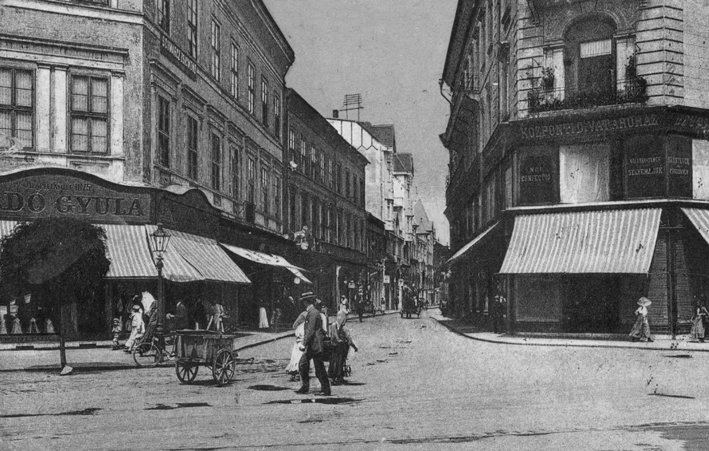
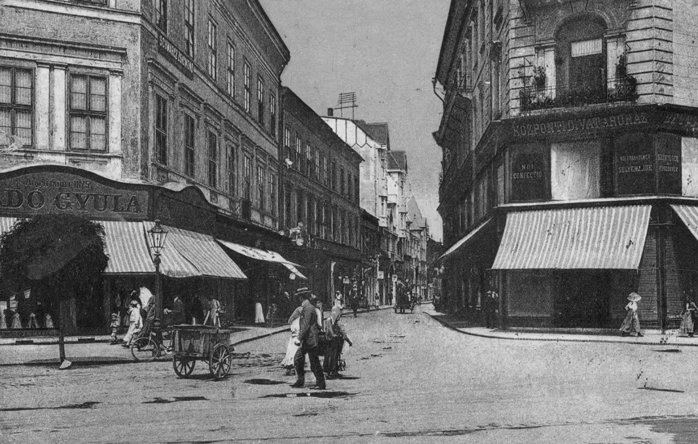

Revoluţia de la 1989
În 21 decembrie 1989, Aradul urma să devină al doilea
oraș (după
Timișoara) care s-a opus regimului comunist prin manifestări la început pașnice,
dar
care
s-au transformat într-unele violente în care 24 de oameni și-au pierdut viața.
 
